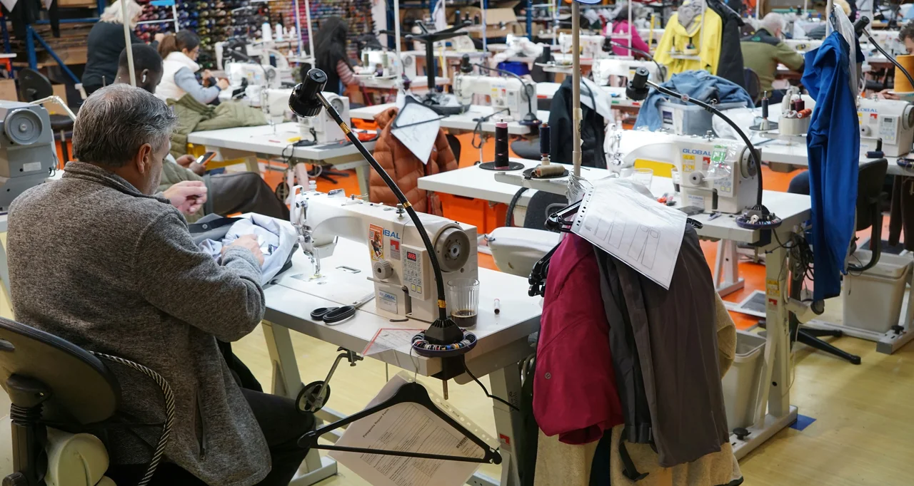
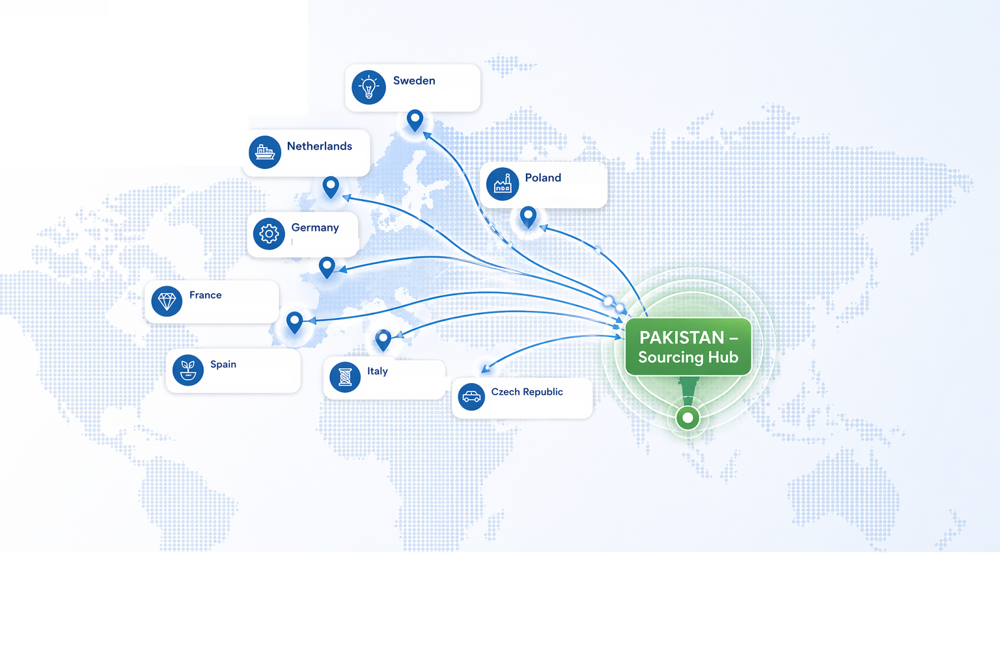

Loading...
Loading...

OUR SOURCING SOLUTIONS
A structured, ERP-integrated workflow that manages every stage of your textile supply chain with precision and transparency.
Critical sourcing decision impacting quality, cost, delivery & compliance.
Structured requirement-based vendor filtering system.
Whether you're looking to discover new suppliers or improve performance with your existing ones, TajPak provides structured, reliable, and scalable sourcing solutions tailored to your needs.
Product specs, volume, quality standards, target pricing — defined upfront
Access to our curated network of audited mills and manufacturers
Capacity, quality history, compliance, financial stability
Coordinate development of proto samples, fit samples, and pre-production samples — ensuring quality and specifications are validated before bulk orders
Precision matching based on your exact needs
Structured, transparent, and fast — weeks, not months. Continuous performance tracking and support
| Sourcing Channel | Description | Timeline | Client Benefit |
|---|---|---|---|
| TajPak Vetted Network | Pre-audited manufacturers with verified production capacity, quality history, compliance (OEKO-TEX, BSCI, Sedex), and financial stability — across home textiles and apparel in Pakistan | 2-4 weeks | Zero time wasted on unverified suppliers. Immediate access to production-ready partners. |
| Trade Fair Intelligence | Early trend and supplier insights from Heimtextil, Première Vision, Texworld, Magic Las Vegas, and Intertextile — translated into actionable sourcing recommendations | 1-2 months | First-mover advantage. Access to emerging suppliers and materials before competitors. |
| On-Ground Supplier Audits | Physical factory visits and capability assessments across Pakistan's textile hubs (Faisalabad, Lahore, Karachi). Real-time verification of infrastructure, workforce, quality systems, and compliance | 3-6 weeks | No blind spots. Firsthand validation of supplier capabilities before onboarding. |
Production Capacity
Volume capabilities & scalability
Quality Systems
ISO, AQL, testing protocols
Certifications
OEKO-TEX, BSCI, GOTS, Sedex
Financial Stability
Audited financials & references
Labour & Ethics
Fair wages, safe working conditions & ethical compliance
OUR SOURCING HUB
A fully connected textile sourcing ecosystem that integrates vendors, production systems, quality control, and logistics into one seamless global operation — now operating across 38 countries in Europe.

FAQ
We offer Vendor Selection, Merchandising & Design, Market Research, Production Follow Up, Quality Assurance, Shipping & Logistics, After Sales Service, and Supply Chain Integration (ERP dashboards).
Yes. Whether you need to discover new suppliers or improve performance with existing ones, we provide structured, reliable, and scalable sourcing solutions tailored to your needs.
We use four channels: TajPak Vetted Network (pre-screened manufacturers), Trade Fair Intelligence (Heimtextil, Texworld), Targeted Sourcing Missions, and Digital Supplier Discovery for urgent needs.
We evaluate using four criteria: Production Capacity, Quality Systems (ISO/AQL), Certifications (OEKO-TEX, BSCI, GOTS, Sedex), and Financial Stability.
After Sales Service includes ongoing support and feedback management following the completion of shipping and delivery.
⏱️ Sourcing timelines vary depending on product type, complexity, and order volume. At TajPak, each stage is structured to ensure accuracy rather than speed-only execution.
📌 Overall lead time depends on the full cycle, but most complete sourcing programs range between 30–90 days from development to delivery.
LET’S WORK TOGETHER
From vendor integration to final shipment, TajPak delivers a fully managed textile sourcing ecosystem built on transparency, quality, and global standards.